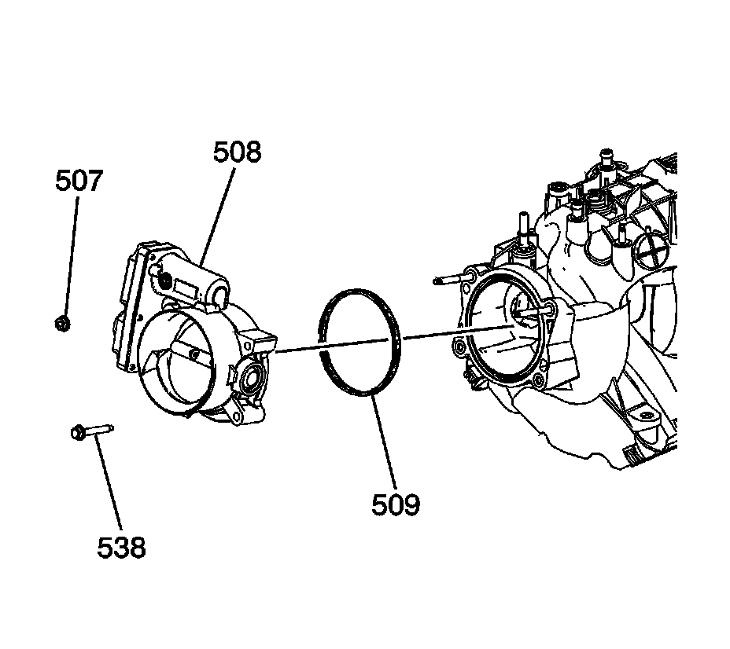

8. Throttle Body Assembly Removal
Throttle Body Removal

Important: The intake manifold, throttle body, fuel injection rail, and fuel injectors may be removed as an assembly. If not servicing the individual components, remove the manifold as a complete assembly.
1. Remove the electrical wire harness connectors from the throttle body.
2. Remove the throttle body nuts (507) and bolts (538).
3. Remove the throttle body (508).
4. Remove the throttle body gasket (509).
5. Discard the gasket.